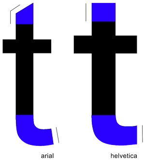
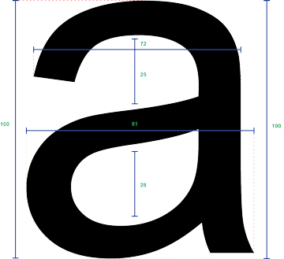

Although Arial was created to fulfill the same purposes as Helvetica, its main predecessor comes from Monotypes' Monotype Grotesque. Many of Arial's terminals and tails are cut off at a diagonal giving it a more humanist design compared to its European counterparts which had a more mechanical finish. The x-height is also slightly higher than normal which creates larger bowls and aperatures. Although the width of each character seems uniform throughout, often times lines often converge into smaller widths that translate well on a screen.

